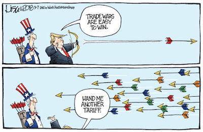

Guerre commerciale ?!? Il y a quelques mois à peine, ce terme évoquait les pages jaunies et peu lues de quelques historiens économiques aux tomes effrayants. Qui se souvient des guerres commerciales franco-italienne (1886-1898), franco-suisse (1892-1895), germano-russe (1893-1894) ? Tout au plus, pourrait-on écrire quelques phrases sur la crise de 1929 et le Hawley-Smoot Tariff Act, qui visait à protéger les entreprises américaines de la concurrence étrangère.
Sans doute a-t-on longtemps rangé ces guerres commerciales dans le placard de l’histoire grâce à une conclusion un peu simpliste : ayant constaté les méfaits de ces guerres commerciales, les nations se regroupent et signent le GATT qui deviendra l’OMC avec comme principal objectif d’éviter ces situations non coopératives qui diminuent le bien-être de tous. Pour beaucoup d’observateurs, l’OMC et ses règles de réciprocité et de non-discrimination ont assuré la paix commerciale.
Le POTUS n’est pas d’accord et répète en boucle sur Fox : “The trade war was started many years ago by them and the United States lost… We lost $500 billion in trade deficits last year. We can’t do that.”
En fait il parle peut-être, soyons généreux, d’une sous-évaluation du Yuan qui aurait permis à la Chine d’être un peu plus compétitive que le niveau de compétitivité lié à ses fondamentaux. Car en fait s’il n’y a pas eu de guerres commerciales depuis longtemps, il y a bien eu plusieurs guerres des monnaies.
Pour Trump, une guerre commerciale, ce n’est pas une politique désuète au relent mercantiliste qui a démontré son inefficacité, c’est un outil politique qui lui fait marquer des points auprès de son électorat. Il utilise les tarifs à des fins populistes. Que va-t-il se passer ? D’après Trump : “trade wars are good, and easy to win!”

Mais d’après quelques rares études économiques (Ossa, 2014 ; Nicita et al. 2017) les tarifs pourraient augmenter entre 20 et 60% suivant les pays en cas de guerre commerciale mondiale, ce qui pourrait entraîner une baisse de la croissance mondiale allant de 1 à 2% selon Krugman et évidemment des pertes bien plus conséquentes pour l’économie américaine. Une guerre commerciale entre la Chine et les Etats-Unis ne devrait impacter l’Europe qu’indirectement via une baisse de la demande américaine. Mais si guerre commerciale il y a, elle sera coûteuse.
Pour illustrer, prenons un exemple concret : les machines à laver. En janvier, Trump annonce une forte augmentation des tarifs sur ces produits, principalement pour sauver Whirlpool, c’est-à-dire du made-in-america garant d’emplois et d’innovation :
“We hope that the tariffs will ensure the highest level of innovation” — Aaron Spira, Whirlpool’s chief legal officer
Dans les faits, c’est une hausse inédite de 17% du prix des lave-linges. Alors certes, des emplois ont été sauvegardés, mais si vous sommez ces 17% sur les 10 millions de machines à laver vendues par an vous obtenez une somme qui dépasse largement les salaires versés, en bref une telle politique est extraordinairement coûteuse. L’histoire devient encore plus incohérente, si l’on songe que les taxes sur l’acier annoncées par Trump vont renchérir le coût de fabrication de ces machines. Pour parachever l’illustration, il est évident que la meilleure stratégie de représailles des “partenaires” est de taxer les machines à laver américaines (déjà annoncée par la Chine). Bye, bye les emplois sauvegardés…
Bref, les pertes nettes des guerres commerciales apparaissent rapidement et en principe elles ne durent pas longtemps, celle engendrée par le Hawley-Smoot Tariff Act s’est clôturée deux ans plus tard avec le Reciprocal Trade Agreement Act, dans l’intervalle le monde s’est appauvri. Ceci étant dit, les économistes oublient souvent que le politique ne regarde pas que l’économie, son électorat est de plus en plus opposé à toutes politiques d’ouverture y compris, désormais, commerciale.